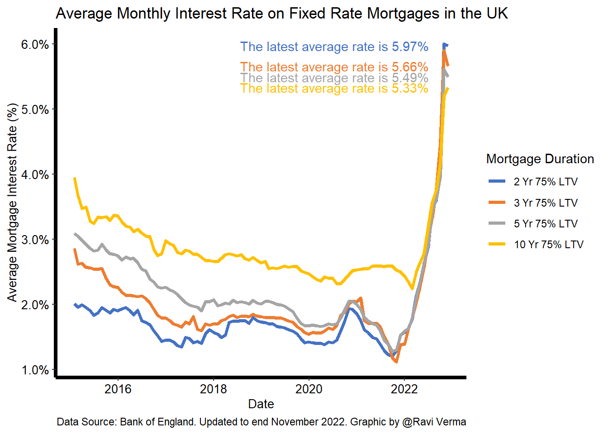
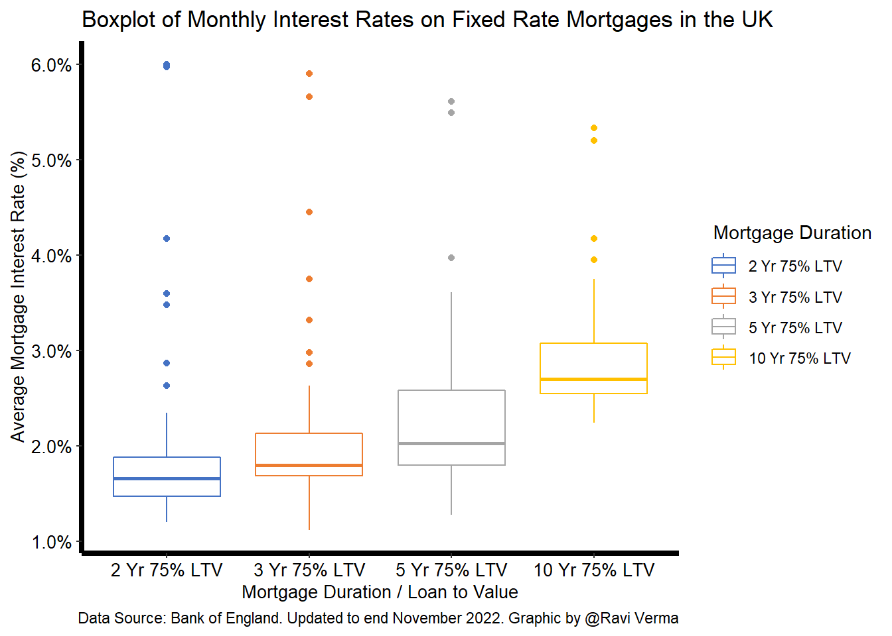

import pandas as pd
import requests
import ioAim
This blog post is about downloading and graphing average monthly interest mortgage data in the UK which is provided by the central bank, the Bank of England.
The Bank of England has a database https://www.bankofengland.co.uk/boeapps/database/
Inspired by https://www.datacareer.co.uk/blog/bank-of-england-s-statistical-interactive-database-iadb-using-python/
Coding
Import python packages to download data from Bank of England website.
Install any packages not already installed.
library(reticulate)
conda_install("r-reticulate", "requests")Create arguments for request function from the Bank of England website. Here we specify the data points we want, the time period etc.
url_endpoint = 'http://www.bankofengland.co.uk/boeapps/iadb/fromshowcolumns.asp?csv.x=yes'
payload = {
'Datefrom' : '01/Jan/2015',
'Dateto' : 'now',
'SeriesCodes': 'IUMBV34,IUMBV37,IUMBV42,IUMBV45',
'CSVF' : 'TN',
'UsingCodes' : 'Y',
'VPD' : 'Y',
'VFD' : 'N'
}
headers = {
'User-Agent': 'Mozilla/5.0 (X11; Linux x86_64) '
'AppleWebKit/537.36 (KHTML, like Gecko) '
'Chrome/54.0.2840.90 '
'Safari/537.36'
}Check that the request has successfully completed.
response = requests.get(url_endpoint, params=payload, headers=headers)
# Check if the response was successful, it should return '200'
print(response.status_code)200print(response.url)https://www.bankofengland.co.uk/boeapps/database/_iadb-FromShowColumns.asp?csv.x=yes&Datefrom=01%2FJan%2F2015&Dateto=now&SeriesCodes=IUMBV34%2CIUMBV37%2CIUMBV42%2CIUMBV45&CSVF=TN&UsingCodes=Y&VPD=Y&VFD=NDownload the data using pandas and read into a data frame.
df = pd.read_csv(io.BytesIO(response.content))Check the data and the data types of each column.
df.head() DATE IUMBV34 IUMBV37 IUMBV42 IUMBV45
0 31 Jan 2015 2.01 2.86 3.09 3.95
1 28 Feb 2015 1.96 2.62 3.05 3.67
2 31 Mar 2015 1.99 2.63 2.98 3.47
3 30 Apr 2015 1.95 2.57 2.92 3.49
4 31 May 2015 1.90 2.56 2.86 3.28df.info()<class 'pandas.core.frame.DataFrame'>
RangeIndex: 95 entries, 0 to 94
Data columns (total 5 columns):
# Column Non-Null Count Dtype
--- ------ -------------- -----
0 DATE 95 non-null object
1 IUMBV34 95 non-null float64
2 IUMBV37 95 non-null float64
3 IUMBV42 95 non-null float64
4 IUMBV45 95 non-null float64
dtypes: float64(4), object(1)
memory usage: 3.8+ KBConvert the data column type into datetime.
df['DATE'] = pd.to_datetime(df['DATE'])
df.dtypesDATE datetime64[ns]
IUMBV34 float64
IUMBV37 float64
IUMBV42 float64
IUMBV45 float64
dtype: objectFor plotting we will use ggplot and load other relevant packages.
library(ggplot2)
library(dplyr)
library(tidyr)Use reticulate package to extract the python data frame into R
df <- py$df
colnames(df) <- c("date", "2 Yr 75% LTV", "3 Yr 75% LTV", "5 Yr 75% LTV", "10 Yr 75% LTV")Convert the data frame from wide format into tidy format.
df_tidy <- pivot_longer(df, cols = 2:5, names_to = "duration")For plotting we want the order of the legend to be in a specific order, e.g. 2 years to 3 to 5 to 10 etc. so we need to specify the order.
data_new <- df_tidy
data_new$duration <- factor(data_new$duration,
c("2 Yr 75% LTV", "3 Yr 75% LTV", "5 Yr 75% LTV", "10 Yr 75% LTV"))Plotting
Plot the average monthly interest rates using ggplot as a line plot.
p <- ggplot(data_new, aes(date, value/100, colour=duration)) +
geom_line(lwd=1.4)
p + theme(panel.grid.major = element_blank(),
panel.grid.minor = element_blank(),
panel.background = element_blank(),
axis.line = element_line(size = 1.5, colour = "black"),
axis.text.x = element_text(size = 10, colour = "black"),
axis.text.y = element_text(size = 10, colour = "black"),
axis.title.x = element_text(size = 10, colour = "black"),
axis.title.y = element_text(size = 10, colour = "black"),
legend.background = element_rect(fill = NA),
legend.key = element_rect(fill = NA, color = NA)) +
labs(x = "Date",
y= "Average Mortgage Interest Rate (%)",
title = "Average Monthly Interest Rate on Fixed Rate Mortgages in the UK",
caption = "Data Source: Bank of England. Updated to end November 2022. Graphic by @Ravi Verma",
colour="Mortgage Duration") +
scale_color_manual(values = c("#4472C4", "#ED7D31", "#A5A5A5", "#FFC000")) +
scale_y_continuous(labels = scales::label_percent(accuracy=0.1)) +
geom_text(data = filter(data_new, date == max(date)),
aes(label = sprintf("The latest average rate is %s%%", value)), show.legend = FALSE, nudge_x = -75000000)
Plot the average monthly interest rates using ggplot as a box plot.
p <- ggplot(data_new, aes(x=duration, y=value/100, color=duration))
p + geom_boxplot() +
theme(panel.grid.major = element_blank(),
panel.grid.minor = element_blank(),
panel.background = element_blank(),
axis.line = element_line(size = 1.5, colour = "black"),
axis.text.x = element_text(size = 10, colour = "black"),
axis.text.y = element_text(size = 10, colour = "black"),
axis.title.x = element_text(size = 10, colour = "black"),
axis.title.y = element_text(size = 10, colour = "black"),
legend.background = element_rect(fill = NA),
legend.key = element_rect(fill = NA, color = NA)) +
scale_color_manual(values = c("#4472C4", "#ED7D31", "#A5A5A5", "#FFC000")) +
labs(x = "Mortgage Duration / Loan to Value",
y= "Average Mortgage Interest Rate (%)",
title = "Boxplot of Monthly Interest Rates on Fixed Rate Mortgages in the UK",
caption = "Data Source: Bank of England. Updated to end November 2022. Graphic by @Ravi Verma",
colour=" Mortgage Duration") +
scale_y_continuous(labels = scales::label_percent(accuracy=0.1))